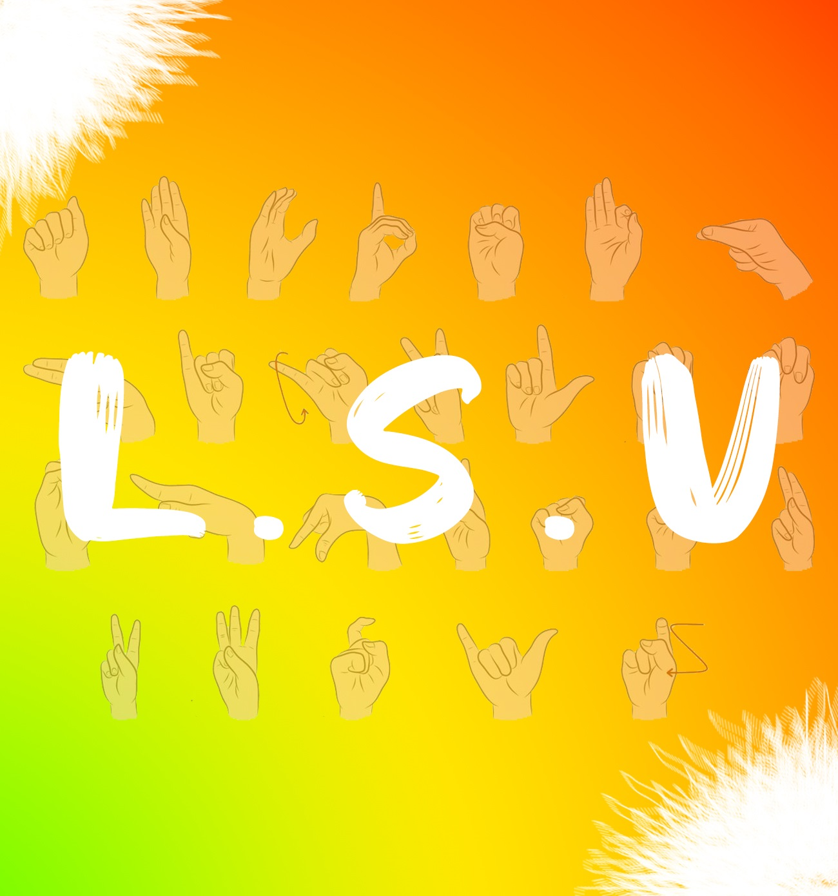
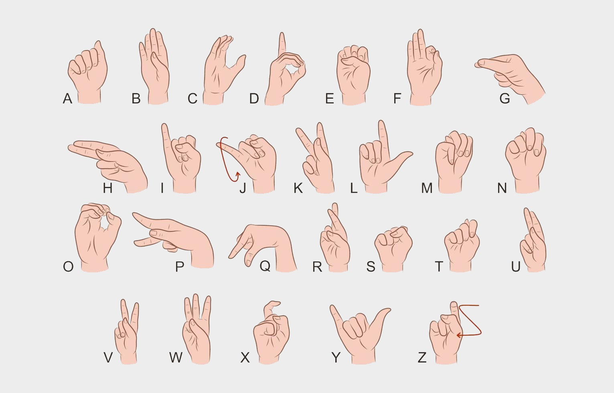

Lengua de Señas Venezolana
Un punto sumamente imprescindible en la definición referente a la lengua de señas venezolana (LSV).Morales (2008), define la lengua de señas de acuerdo a diferentes autores en su investigación y sus características:
“..Como un sistema arbitrario de señas por medio del cual las personas Sordas realizan sus actividades comunicativas dentro de una determinada cultura (Pietrosémoli, 1989a, p. 5). Es decir, una manifestación del lenguaje humano que, debido a la imposibilidad de utilización de la vía oral-auditiva por parte de los hablantes, es transmitida a través de la vía viso-gestual. En este sentido se señala:
Es un código que cumple con todas las funciones que las lenguas orales cumplen en las comunidades de oyentes. Las lenguas de señas son las lenguas naturales de las personas Sordas. Estos sistemas se adquieren de manera natural, y además permiten a sus usuarios desarrollar el pensamiento de manera espontánea y cumplir con las funciones comunicativas propias de un conglomerado social. (Oviedo, Rumbos y Pérez, 2004, p. 7)
Contenido
- Visagrafía
- Programación
- Herramientas
- Estructuras
- Operadores
- Identificadores
- Tipos de datos